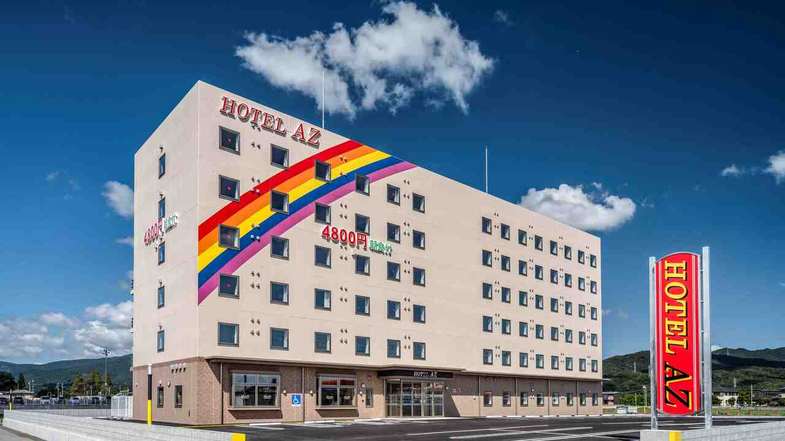
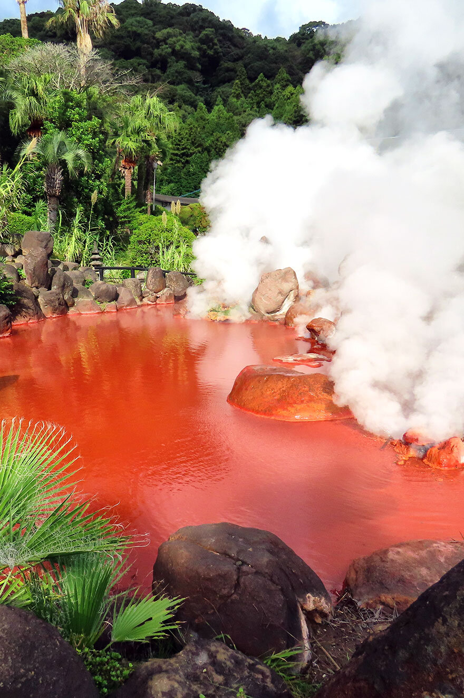
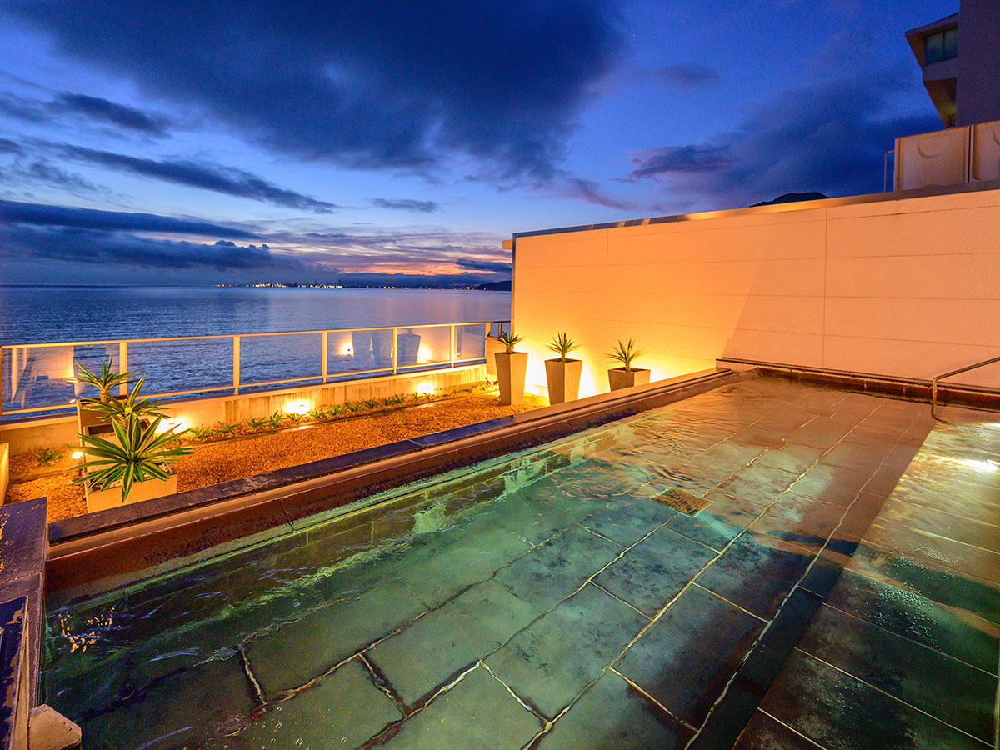
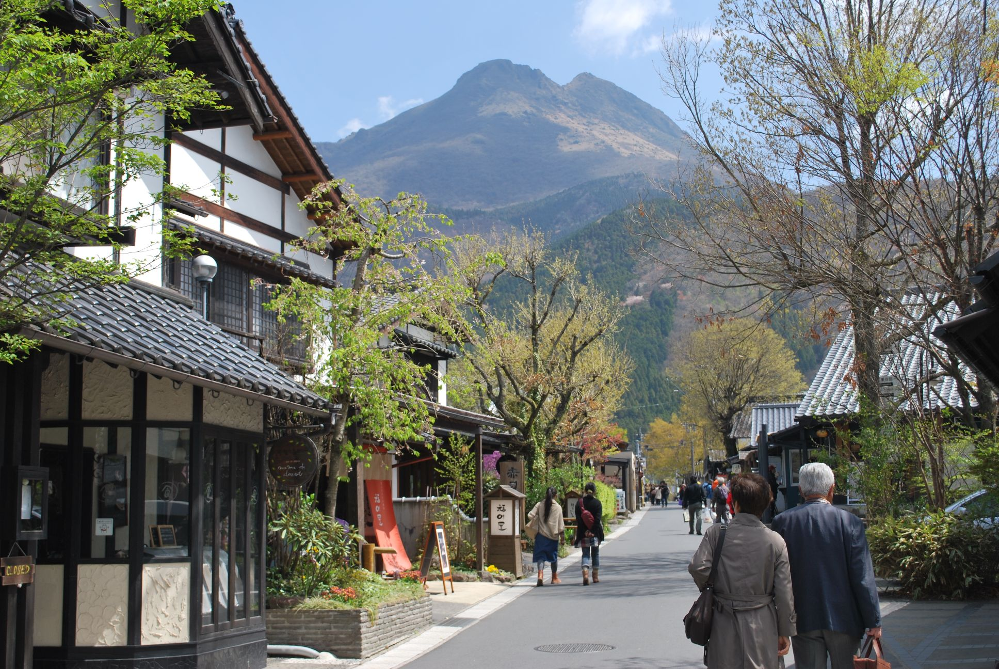

⏰ 08:30
📍 志木駅南口 集合
ココカラファイン前バス停よりリムジンバス出発
⏰ 10:45
🛫 羽田空港 第1T 到着
JALタッチ＆ゴー利用（印刷QRコード準備済み）
⏰ 11:30 発
✈️ 羽田空港発 JAL665便（大分空港行き）
11:30発 ➔ 13:40着（所要時間：約130分）
⏰ 13:40
🛬 大分空港 到着
バジェットレンタカーブースへ（セブン-イレブン前）
🚗 レンタカー受渡＆準備（小型エコカー）
約20分
⏰ 14:00
🚘 レンタカー出発 & 遅めのランチ
空港周辺または移動ルート沿いで昼食
🍴 空港周辺・宇佐ルート ランチ候補

なゝ瀬 大分空港店
空港ターミナル3F / 通し営業
名物：とり天定食・りゅうきゅう
目安：￥1,000〜￥1,999
食べログを開く ➔

魚市魚座
守江海岸沿い（17時まで）
名物：海鮮丼・とり天定食（￥1,320）
目安：￥1,000〜￥1,999
食べログを開く ➔

かくまさ（宇佐神宮 表参道）
宇佐神宮参道すぐ
名物：だんご汁・とり天定食
目安：￥1,000〜￥1,500
食べログを開く ➔
⏰ 15:45 - 16:45
⛩️ 宇佐神宮 参拝・視察
全国4万社ある八幡宮の総本社（国宝）
⏰ 17:45
🅿️ 大会会場（ビーコンプラザ）駐車場下見
明日車で向かうため、動線と無料・有料パーキングを確認

⏰ 18:15
🏨 HOTEL AZ 大分別府店 チェックイン
⏰ 19:00
🍺 夕食：別府駅周辺 ご当地グルメ
🍴 1日目 夕食候補リスト
さかなや道場 別府駅東口店
別府駅東口すぐ / 活魚・大分郷土料理
名物：豊後サバ・とり天・関アジ
目安：￥3,000〜￥4,000
じゃらんグルメを見る ➔
まろみ
HOTEL AZから徒歩3分
名物：サクサクとり天定食
目安：￥800〜￥1,500
食べログを開く ➔
大陸ラーメン
HOTEL AZから徒歩4分
名物：別府冷麺＆とり天
目安：￥800〜￥1,500
食べログを開く ➔
⏰ 08:00
🍳 朝食（HOTEL AZ バイキング）
※代理事前受付（06:00-09:00）：岡野様が3人分一括受付を行い、完了スクショをLINE共有
⏰ 09:00 - 11:30
♨️ 自由時間（時間があれば教育視察）
地熱・地域資源活用や地元文化の学習視察
🚗 午前・立ち寄り候補スポット

別府地獄めぐり（血の池地獄）
国指定名勝 / 予約不要
真っ赤に染まる湯けむりの絶景

明礬温泉 湯の里
湯の花小屋見学＆名物地獄蒸しプリン（￥400）
HOTEL AZから車で約15分
大分香りの博物館
室内で快適に楽しめる体験型スポット
HOTEL AZから車で約10分
🚗 車移動（HOTEL AZ ➔ ビーコンプラザ）
約15分
⏰ 12:30 - 16:45（受付 11:30 - 13:30）
🏛️ 第75回全国高等学校PTA連合会大会 分科会
会場：ビーコンプラザ
🚗 車移動（ビーコンプラザ ➔ 別府清風）
約15分

⏰ 17:00
🏨 大江戸温泉物語 別府清風 チェックイン
⏰ 18:30
🍺 夕食：別府清風 近隣グルメ
🍴 2日目 夕食候補リスト
とよ常 本店
清風から徒歩3分
名物：特上天丼・とり天・郷土料理
目安：￥1,500〜￥2,500
食べログを開く ➔
海鮮いづつ
清風から徒歩4分
名物：ボリューム満点 海鮮丼
目安：￥1,500〜￥2,500
食べログを開く ➔
ろばた仁 本店
清風から徒歩3分
名物：関あじ関さば・炭火炉端焼き
目安：￥3,000〜￥4,000
食べログを開く ➔
⏰ 07:00
🍳 朝食（別府清風 バイキング）
⏰ 08:00
🚗 チェックアウト ➔ ビーコンプラザへ
🚗 車移動（別府清風 ➔ ビーコンプラザ）
約15分
⏰ 08:30 - 12:30
🏛️ 2日目 全体大会（ビーコンプラザ）

⏰ 12:30 - 16:30
🛍️ 湯布院 散策・ランチ・お土産タイム
🎁 湯布院 お土産＆立ち寄りスポット
湯の坪街道
メインストリート
散策しながら食べ歩き＆お土産探し
鞠智（cucuchi）
焼き立てどら焼き＆地元素材の和スイーツ
ジャズとようかん
ピアノ柄の見た目が非常におしゃれな羊羹
高速道路移動（湯布院IC ➔ 日出JCT ➔ 安岐IC）
約45分（ETC ￥1,200〜￥1,400）
⏰ 17:30 - 18:00
🚗 レンタカー返却（18:00必着）
バジェットレンタカー大分空港店へ返却
⏰ 18:00 - 18:55
🛬 大分空港 保安検査＆カードラウンジ
✈️ フライト JAL674便（18:55発 ➔ 20:40着）
約105分
⏰ 20:40
✈️ 羽田空港第一ターミナル到着
着陸後、時間を確認してリムジンバス予約・乗車（予備便：22:20発）
⏰ 21:10
🚌 羽田空港第1T出発
リムジンバス（京急）
🚌 リムジンバス移動（羽田空港 ➔ 志木駅）
約80分
⏰ 22:30
🏁 志木駅到着
おつかれさまでした